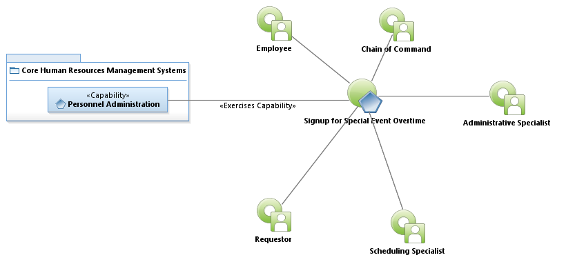
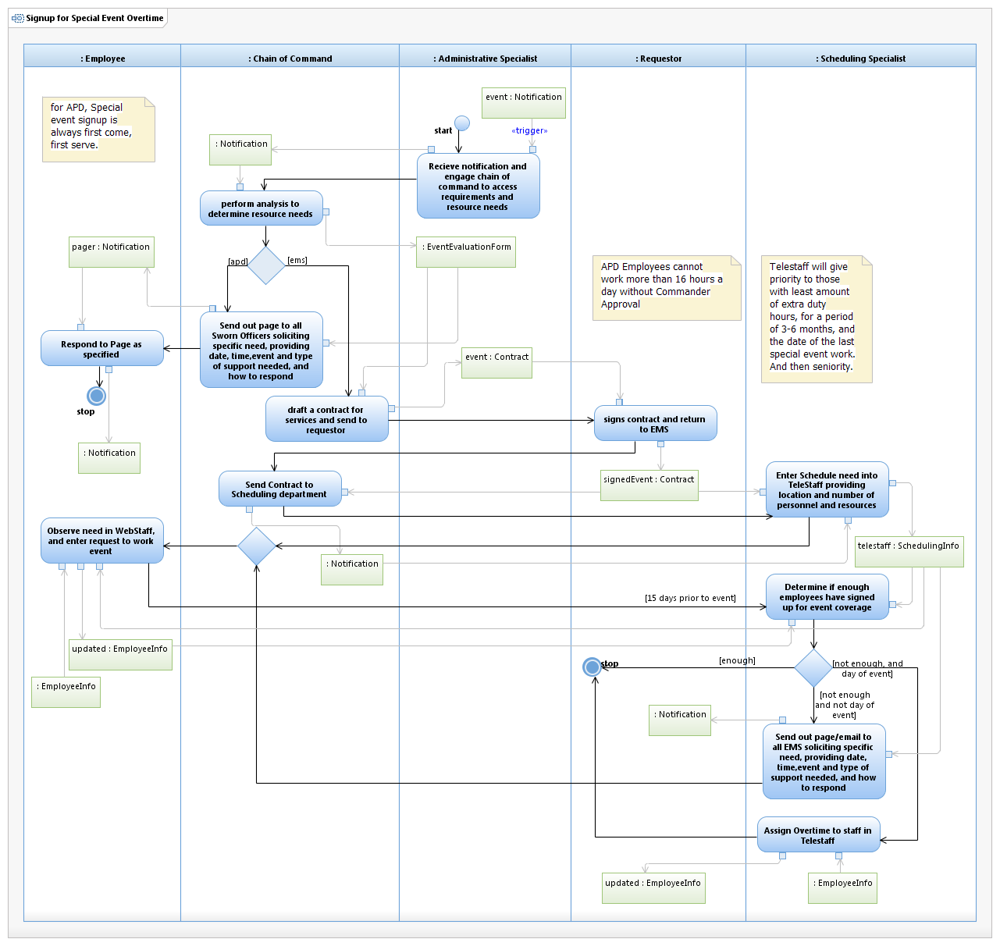

Use Case Model: Signup for Special Event Overtime
Architect: First Last, IT Enterprise Architect
Date Last Modified: 4/22/2013
User Review: Gregg Olson, Sgt Jeff Crawford
Date: 4/22/2013
When the City of Austin is engaged to provide APD or EMS coverage for special events, such as parades, lane closures, festivals, f1, etc officers and EMS personnel can signup to work.
Follow link to Role Definitions

Use Case Model: Signup for Special Event Overtime

Activity Model: Signup for Special Event Overtime